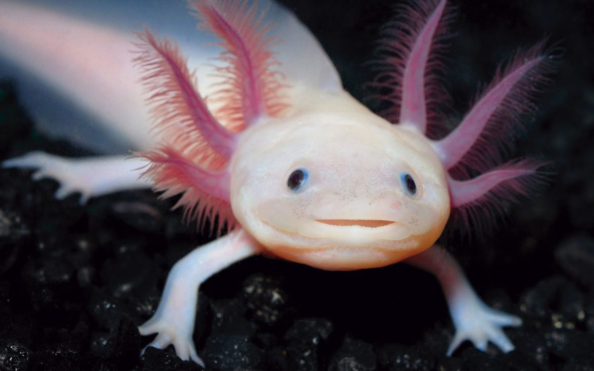
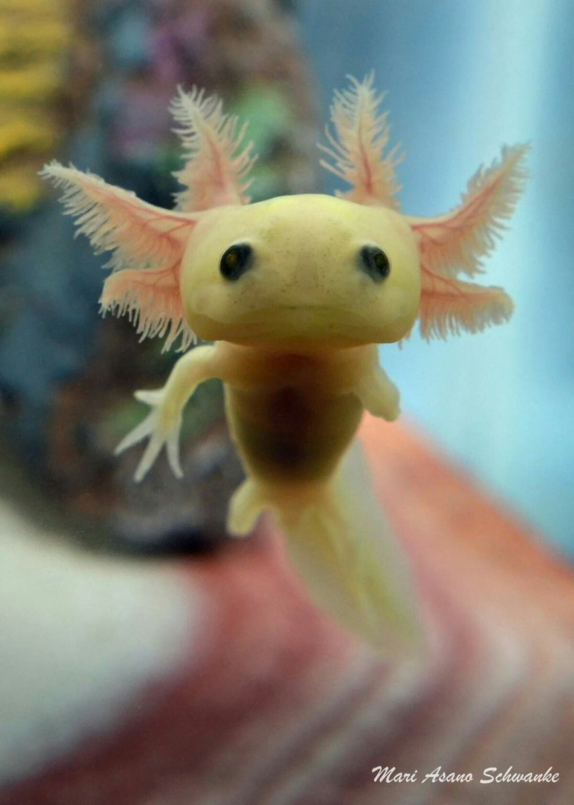
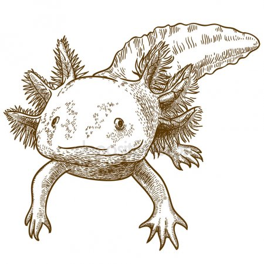

Ideas:
-Los ajolotes son una especie nativa de México que se encuentra
en el lago que Xochimilco en la CDMX. Conforme a la SEMARNAT
"Éstos animales se alimentan de moluscos, gusanos, larvas, crustáceos".
-De acuerdo a la bbc "tiene el genoma más grande que se ha
secuenciado hasta ahora, 10 veces más grande que el genoma humano."
Lo cual es un orgullo para México en temas de biodiversidad.
-La forma de un ajolote, señala el NYTimes "{...} alegre anfibio
con cuatro patas, una corona de agallas de textura plumosa y
una larga aleta caudal ahusada. Puede tener un color rosa pálido
o ser dorado, gris o negro, moteado o liso".
-Señala el gobierno federal de México "la excepcional capacidad
de regenerar miembros perdidos, e incluso ¡parte del cerebro!...
y del ¡corazón!".
-Reporta la bbc que algunos cinetíficos han estado cultivando
ajolotes en sus laboratorios para ver sus procesos biológicos
y aplicarlos en la reparación de lesiones cerebrales o de
médula espinal.
-Es importante mencionar que están en peligro de extinción
conforme a la Unión Internacional para la Conservación de
la Naturaleza desde el 2006.
A continuación, les compartimos un video hecho por el HuffPost México,
y el segundo de la UNAM.
Links:
-https://www.youtube.com/watch?v=0jjR6tEEepk
-https://www.youtube.com/watch?v=wBkpSvl1Tv8
Imágenes:



Para poder preservarla recomendamos:
Lista ordenada